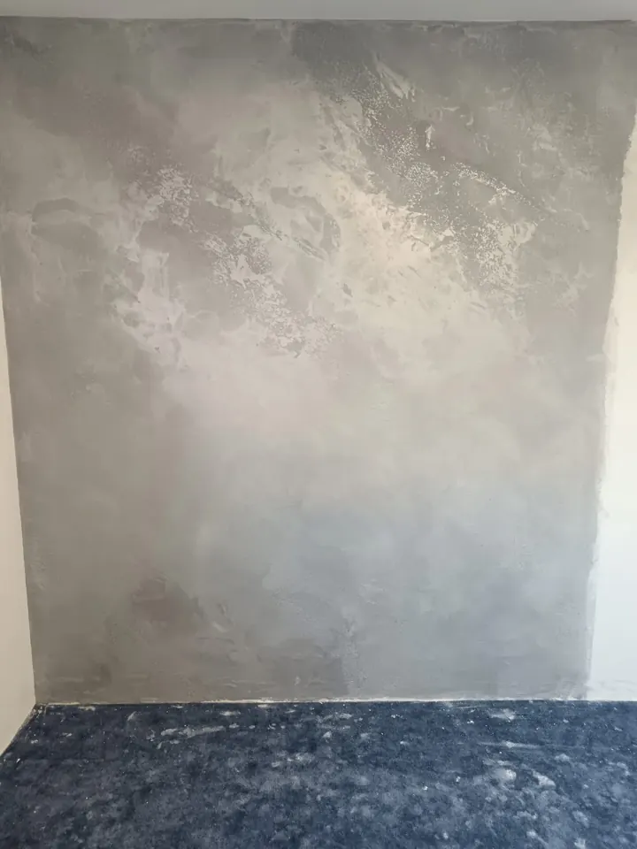
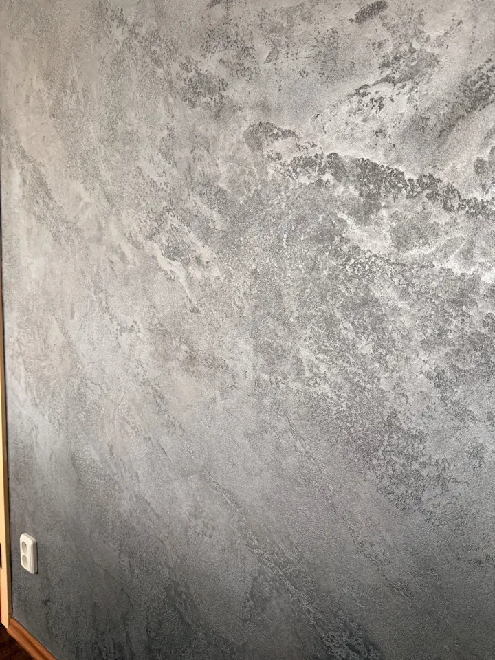
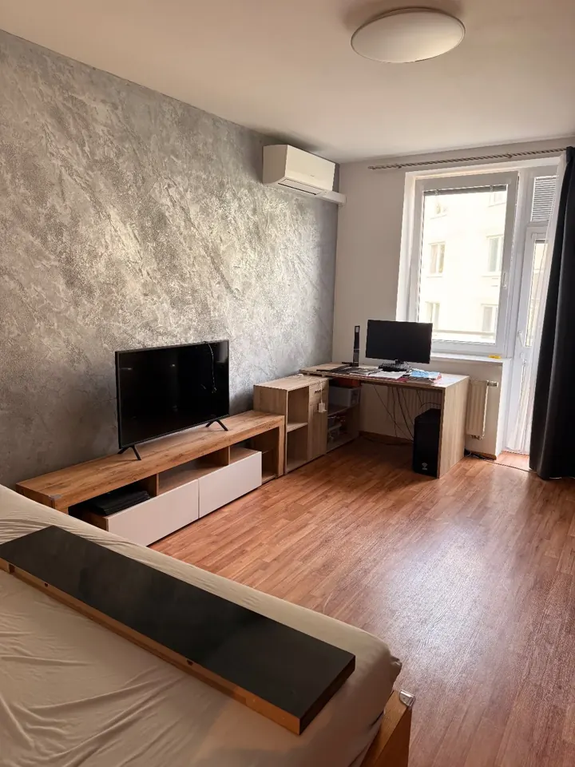
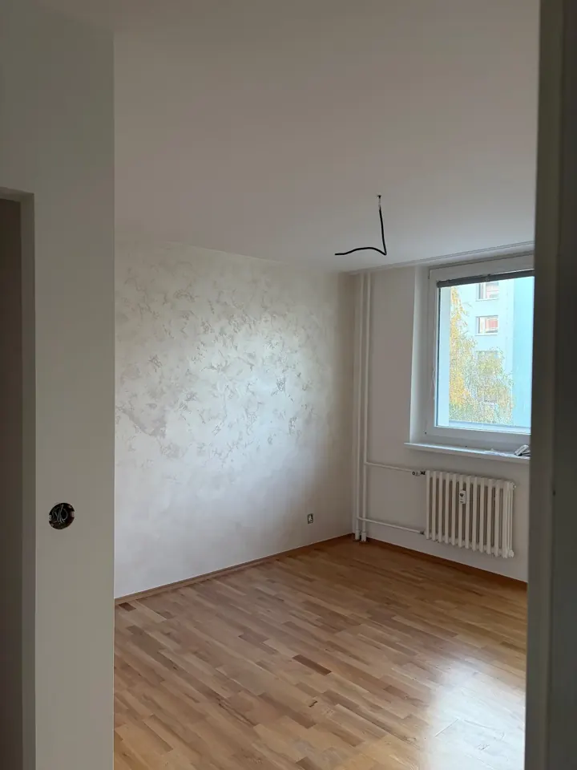
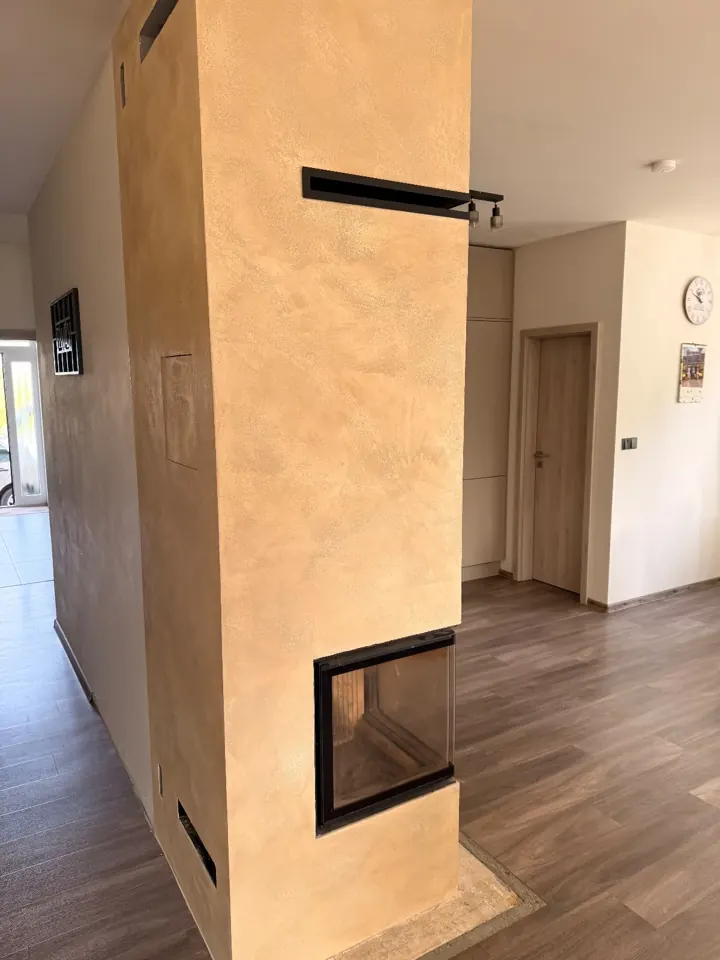
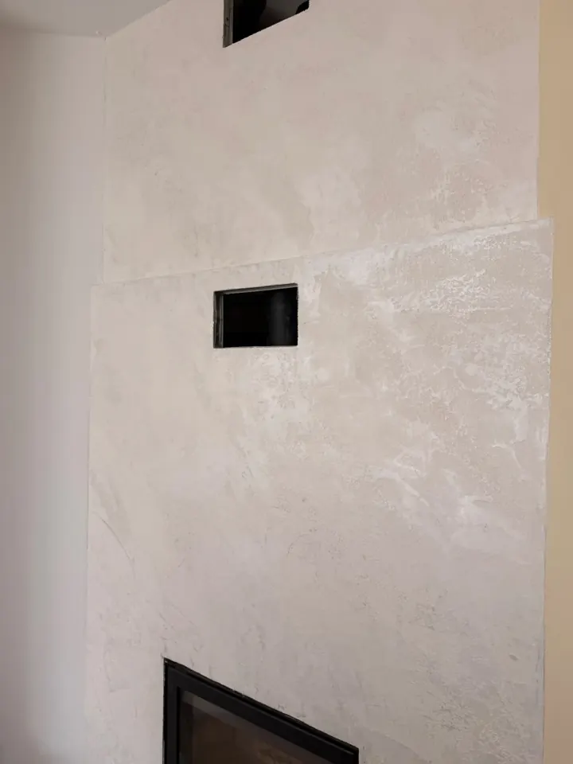
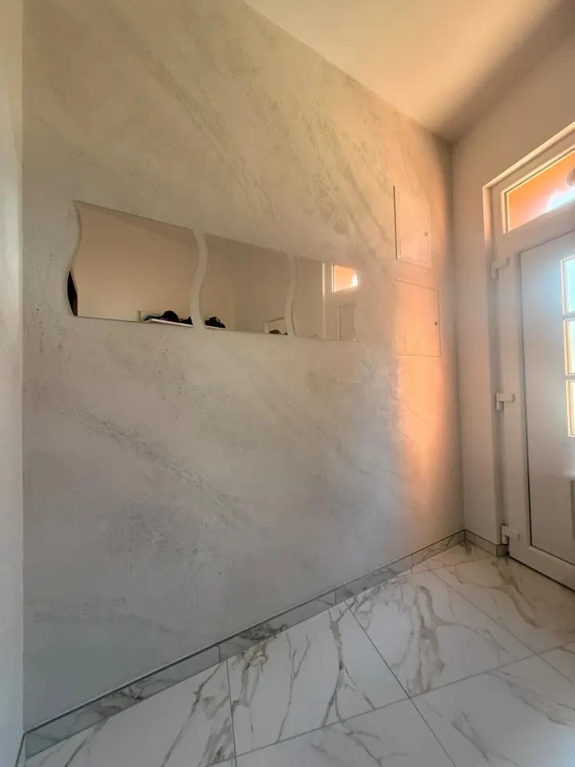

Betonové a dekorativní stěrky v Brně
Stěna, která vypadá jako beton, kámen nebo štuk. Poradíme s výběrem techniky, připravíme podklad a stěrku naneseme ručně. Přijdou pokaždé stejní lidé a po práci uklidíme.
Pošlete fotku stěny a svou představu a do 24 hodin se vám ozveme. Nacenění je zdarma a nezávazné. Termín, který domluvíme, dodržíme.

Podívejte se na výsledek








Proč stěrku s Tři Mistry
Dekorativní stěrka je ruční práce a výsledek dělá zkušenost. Pomůžeme vybrat techniku, která se hodí do vašeho prostoru, a stěrku uděláme tak, aby dlouho vypadala dobře.
Poradíme s výběrem
Betonová stěrka, benátský štuk, marmorino nebo travertino. Pomůžeme vybrat techniku, barvu i kresbu, která sedne k vašemu interiéru.
Stěrka i do koupelny
Betonovou stěrku děláme i do koupelen. Vhodnost ověříme podle podkladu a zatížení vodou, přes obklady nabízíme mikrocement.
Stejní lidé, čistá práce
Kdo si s vámi stěrku domluví, ten ji i udělá. Okolí zakryjeme a po práci uklidíme.
Jak probíhá realizace
Společně vybereme vzhled
Probereme barvu, strukturu a techniku, která se hodí do vašeho prostoru.
Zkontrolujeme stěnu
Ověříme rovinnost a soudržnost podkladu. Určíme, jakou přípravu potřebuje.
Naneseme stěrku
Stěrku naneseme ve vrstvách a ručně vytvoříme požadovanou kresbu.
Dokončíme detaily
Dokončíme rohy a napojení. Probereme, jak o hotový povrch pečovat.
Cena a časté otázky
Kolik stojí dekorativní nebo betonová stěrka?
Cena závisí na ploše, stavu a rovinnosti podkladu, zvolené technice a prostředí. Benátský štuk je pracnější než betonová stěrka. Pošlete fotku stěny a přibližné rozměry a připravíme nezávaznou cenu.
Jak vybrat betonovou stěrku nebo benátský štuk?
Betonový efekt, benátský štuk, marmorino a travertino mají rozdílnou kresbu a strukturu. Projdeme s vámi inspiraci a vybereme techniku podle světla, okolních materiálů a využití místnosti. Každý ručně zpracovaný povrch má vlastní kresbu.
Hodí se betonová stěrka do koupelny?
Záleží na podkladu a kontaktu s vodou. Vhodnost pro sprchový kout a další mokré zóny posoudíme individuálně. Pro stěrku přes vhodné obklady nabízíme také mikrocement.
Jde stěrka udělat přes obklady?
Přes vhodné obklady nabízíme mikrocement. Jestli je podklad vhodný, posoudíme podle fotek nebo na místě.
Jak dlouho stěrka trvá?
Stěrka se nanáší ve více vrstvách a každá musí zaschnout. Přesnou délku práce potvrdíme spolu s cenou podle plochy a techniky.
Jak se o stěrku starat?
Při předání vysvětlíme, jak hotový povrch čistit a čemu se vyhnout, aby dlouho vypadal dobře.
Kde stěrky děláte?
V celém Brně a okolí do zhruba 20 km, například v Modřicích, Šlapanicích, Kuřimi, Rosicích nebo Slavkově u Brna.
Kolik stojí betonová nebo dekorativní stěrka?
Cenu počítáme podle skutečné plochy a zvolené techniky. Zakrytí, příprava podkladu i úklid jsou v ceně, kterou vám předem potvrdíme. Žádné skryté položky.
Kolik metrů čtverečních a kolik rohů a detailů.
Rovinnost a soudržnost stěny, případné opravy.
Betonová stěrka, benátský štuk, marmorino nebo travertino.
Obývák, kuchyň nebo koupelna se zatížením vodou.
Jak získat cenu
Pošlete fotku stěny
Stačí fotka, přibližné rozměry a inspirace, jak má stěna vypadat.
Ozveme se s cenou
Připravíme nezávaznou cenu zdarma. U větší zakázky se přijedeme podívat.
Domluvíme termín
Den nástupu i dokončení potvrdíme předem a dodržíme ho.
nebo zavolejte +420 774 927 182
Stěrky v Brně a okolí do 20 km
- Žabovřesky
- Královo Pole
- Líšeň
- Bystrc
- Bohunice
- Židenice
- Komín
- Starý Lískovec
- Střed
- Modřice
- Šlapanice
- Kuřim
- Rosice
- Slavkov u Brna
Pojďme se domluvit
Pošlete nám stručné zadání. Probereme možnosti a připravíme nabídku podle skutečného rozsahu práce.
Fotografie stěny nebo prostoru, přibližná plocha v m², inspirace, struktura a barevnost.